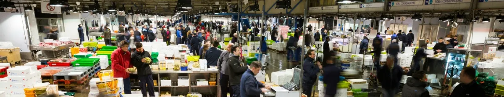
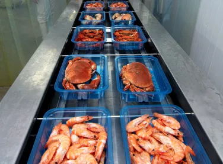
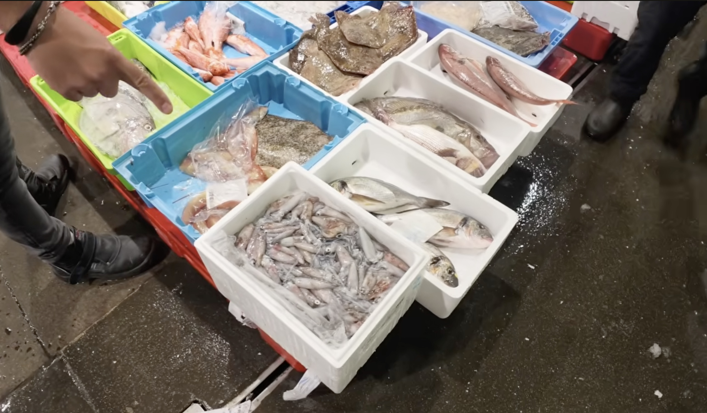

04 · Distribución y alimento
Gremio de Mayoristas de Pescado de Mercabarna
El Mercado Central del Pescado permite seguir la transformación del mar en alimento urbano: recepción, selección, conservación, venta y distribución durante la noche.



Personas en contacto
- José María Marcos — responsable de proyectos del Gremio.
- Jordi Talleda — LINKA, agencia de comunicación que acompaña al Gremio y la campaña #JoMenjoPeix.
Reunión con Jordi: martes 20 de octubre de 2026 a las 10:00.
Qué quiero observar
Acompañar una noche normal de trabajo: la llegada de pescado y marisco, el hielo, las cajas, los ritmos físicos, la negociación, la preparación de pedidos y las salidas hacia pescaderías y restaurantes. El eje no es solo el producto, sino las personas y saberes que sostienen cada tramo.
Acceso
La coordinación con el Gremio puede facilitar los permisos generales y la presentación a empresas concretas, como Slowfish. Antes de fotografiar se acordarán horarios, zonas, personas y cualquier restricción comercial.